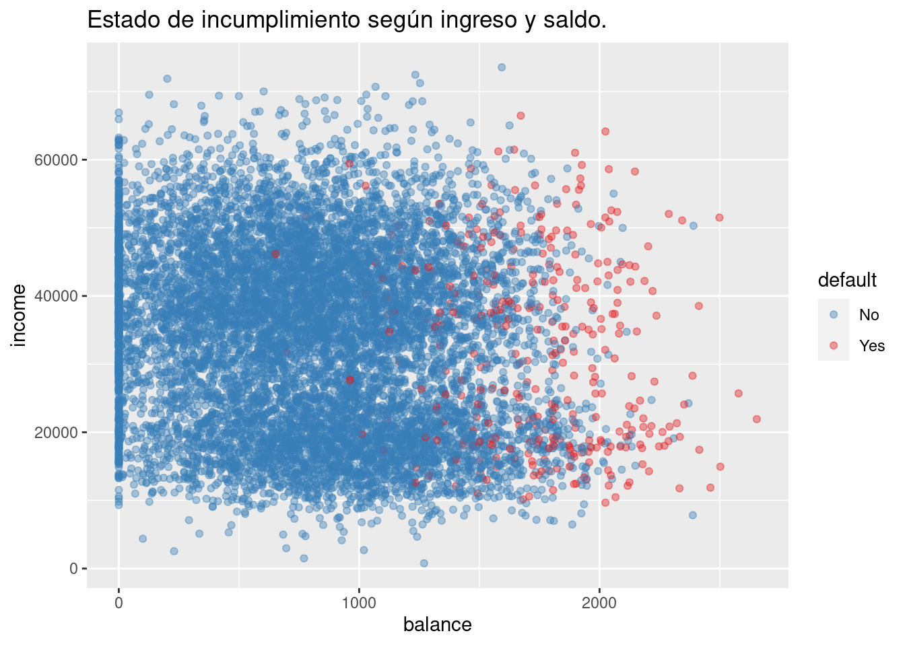
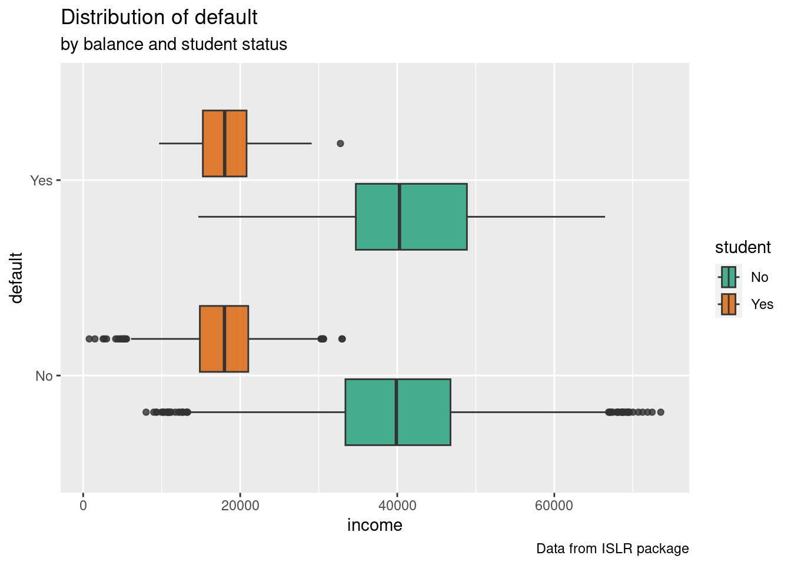
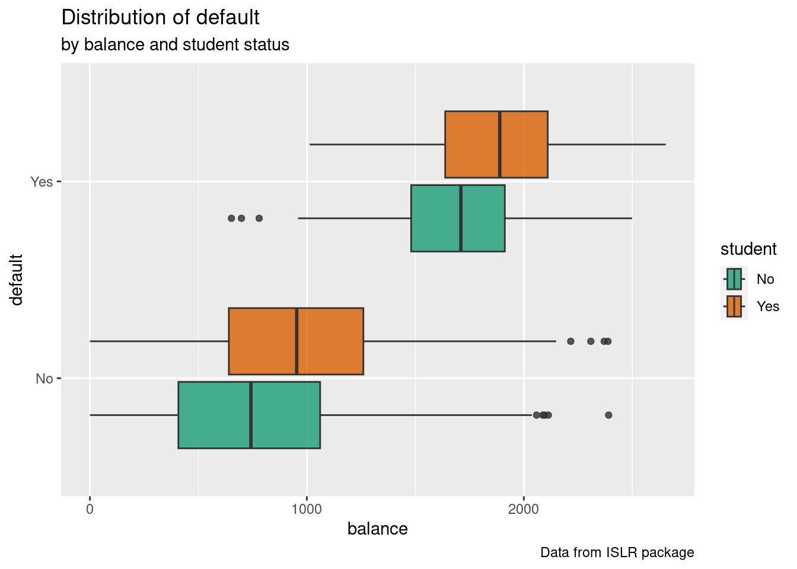
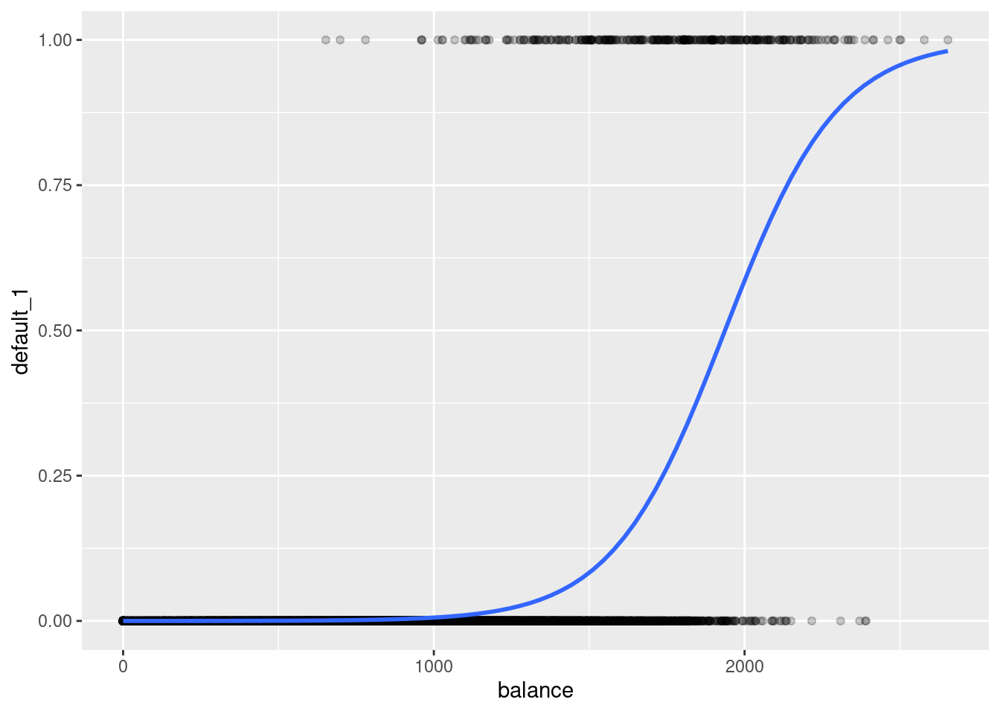

Chapter 5 Regresión logistica
Cuando queremos evaluar la relación entre una o más variables predictoras y una variable de respuesta continua, usamos regresión lineal.
La regresión logística es un método que podemos usar para ajustar un modelo de regresión cuando la variable de respuesta es binaria.
Cuando ajustas un modelo de regresión logística en R, los coeficientes en el resumen del modelo representan el cambio promedio en el logaritmo de las probabilidades de la variable de respuesta asociadas con un aumento de una unidad en cada variable predictora.
\(log[p(X) / (1-p(X))] = β0 + β1X1 + β2X2 + … + βpXp\)
Xj: La j-ésima variable predictora βj: La estimación del coeficiente para la j-ésima variable predictora”
5.1 Ejemplo:
La bse de datos Default contiene información simulada sobre diez mil clientes que nos permite predecir qué clientes incumplirán con su deuda de tarjeta de crédito.
## [1] "default" "student" "balance" "income"## default student balance income
## 1 No No 729.5265 44361.625
## 2 No Yes 817.1804 12106.135
## 3 No No 1073.5492 31767.139
## 4 No No 529.2506 35704.494
## 5 No No 785.6559 38463.496
## 6 No Yes 919.5885 7491.559## [1] 10000 4Base de datos con 10000 observaciones en las siguientes 4 variables. default: Un factor con niveles No y Sí que indica si el cliente incumplió su deuda student: Un factor con niveles No y Sí que indica si el cliente es estudiante balance: El saldo promedio que el cliente tiene en su tarjeta de crédito después de realizar su pago mensual income: Ingresos del cliente”
Default %>%
ggplot(aes(balance, income, color = default)) +
geom_point(alpha = 0.4) +
scale_color_brewer(palette = "Set1", direction = -1) +
labs(title = "Estado de incumplimiento según ingreso y saldo.")  Con la evaluación gráfica parece que “balance” es un mejor predictor de “default” que “income”.
p1 <- Default %>%
ggplot(aes(income, default, fill = student)) +
geom_boxplot(alpha = 0.8) +
scale_fill_brewer(palette = "Dark2") +
labs(title = "Distribution of default",
subtitle = "by balance and student status",
caption = "Data from ISLR package")
p1 
p1 <- Default %>%
ggplot(aes(balance, default, fill = student)) +
geom_boxplot(alpha = 0.8) +
scale_fill_brewer(palette = "Dark2") +
labs(title = "Distribution of default",
subtitle = "by balance and student status",
caption = "Data from ISLR package")
p1 
Visualización de la curva logistica
Default$default_1 <- as.numeric(Default$default=="Yes")
ggplot(data=Default, aes(y=default_1, x= balance)) + geom_point(alpha=0.2) +
stat_smooth(method="glm", se=FALSE, method.args = list(family=binomial)) ## `geom_smooth()` using formula = 'y ~ x'
Utilizaremos el estado de estudiante, el saldo bancario y el ingreso para generar un modelo de regresión logística capaz de predecir la probabilidad de que un individuo dado incumpla su deuda.
model <- glm(default~student+balance+income, family='binomial', data=Default) #generamos el modelo de regresion logistica
summary(model) #ver el modelo##
## Call:
## glm(formula = default ~ student + balance + income, family = "binomial",
## data = Default)
##
## Coefficients:
## Estimate Std. Error z value Pr(>|z|)
## (Intercept) -10.869045196 0.492255516 -22.080 < 0.0000000000000002 ***
## studentYes -0.646775807 0.236252529 -2.738 0.00619 **
## balance 0.005736505 0.000231895 24.738 < 0.0000000000000002 ***
## income 0.000003033 0.000008203 0.370 0.71152
## ---
## Signif. codes: 0 '***' 0.001 '**' 0.01 '*' 0.05 '.' 0.1 ' ' 1
##
## (Dispersion parameter for binomial family taken to be 1)
##
## Null deviance: 2920.6 on 9999 degrees of freedom
## Residual deviance: 1571.5 on 9996 degrees of freedom
## AIC: 1579.5
##
## Number of Fisher Scoring iterations: 8Los coeficientes en la salida indican el cambio promedio en los logaritmos de las probabilidades de incumplimiento.
Por ejemplo, un aumento de una unidad en el saldo está asociado con un aumento promedio de 0.005988 en los logaritmos de las probabilidades de incumplimiento.
Para calcular el cambio la razón de probabilidades para cada variable predictora, podemos utilizar la siguiente sintaxis:
## (Intercept) studentYes balance income
## 0.00001903854 0.52373166965 1.00575299051 1.00000303345También podemos calcular cada razón de probabilidades junto con un intervalo de confianza del 95% para cada razón de probabilidades:
exp(cbind(Odds_Ratio = coef(model), confint(model))) #calcular la razón de probabilidades y el intervalo de confianza del 95% para cada variable predictora"## Waiting for profiling to be done...## Odds_Ratio 2.5 % 97.5 %
## (Intercept) 0.00001903854 0.000007074481 0.0000487808
## studentYes 0.52373166965 0.329882707270 0.8334223982
## balance 1.00575299051 1.005308940686 1.0062238757
## income 1.00000303345 0.999986952969 1.0000191246La razón de probabilidades para cada coeficiente representa el aumento promedio en las probabilidades de que un individuo incumpla, suponiendo que todas las demás variables predictoras se mantengan constantes.
Por ejemplo, la variable predictora saldo tiene una razón de probabilidades de 1.0057.
Esto significa que por cada dólar adicional en el saldo llevado por un individuo, las probabilidades de que el individuo incumpla su préstamo aumentan en un factor de 1.0057, suponiendo que el estado de estudiante y el ingreso se mantengan constantes.
Podemos interpretar las razones de probabilidades para las otras variables predictoras de manera similar.